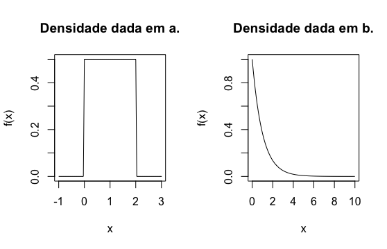

Capítulo 8 Variáveis aleatórias contínuas
Lembre que uma variável aleatória é dita contínua se assume valores em um intervalo de \(\mathbb R\). Por exemplo, o tempo de vida de um aparelho eletrônico, a temperatura em um determinado dia, a altura de uma pessoa ou o peso de um bebê recém-nascido.
Para caracterizar uma variável aleatória usamos a chamada função de densidade, definida a continuação:
Definição 8.1 (Função de densidade) Uma função \(f:\mathbb R \rightarrow \mathbb R\), é uma função de densidade se satisfaz as seguintes condições:
\(f(x) \geq 0\), para qualquer \(x\in\mathbb R\)
\(\int_{-\infty}^\infty f(x) dx = 1\).
Definição 8.2 Dizemos que \(X\) é uma variável (absolutamente) contínua se existir uma função de densidade \(f\) tal que para qualquer \(A \subset \mathbb R\) \[ P(X\in A) = \int_{A} f(x) dx \]
Por exemplo, se quisermos calcular a probabilidade de \(X\) pertencer a um intervalo da reta \([a,b]\), basta calcular:
\[ P(a\leq X \leq b)=\int_a^b f(x) dx. \]
Exemplo 8.1 Verifique se as seguintes funções são funções de densidade:
\[\begin{align*} f(x) = \begin{cases} \frac{1}{2}, \; 0 \leq x \leq 2\\ 0, \text{caso contrário}. \end{cases} \end{align*}\]
\[\begin{align*} f(x) = \begin{cases} e^{-x}, \; x > 0 \\ 0, \text{caso contrário} \end{cases} \end{align*}\]
Apresentamos os gráficos das funções em a. e b., a seguir:

Solução. Claramente as funções acima são não negativas para qualquer valor de \(x\).
Agora, vamos verificar se integram 1. Com efeito: \[\begin{align*} \int_{0}^2 \frac{1}{2} dx &= \frac{1}{2} \left. x\right|_{0}^{2} \\ &= \frac{1}{2} \times 2 =1 \end{align*}\]
\[\begin{align*} \int_0^\infty e^{-x} dx &= \left.-e^{-x}\right|_{0}^\infty \\ &= -(e^{-\infty} - 1) = 1. \end{align*}\] Portanto, as duas funções são funções de densidade.
Exemplo 8.2 Suponha que \(X\) seja uma variável aleatória contínua cuja função de densidade é dada por \[ f(x) = \begin{cases} c(4x - 2x^2) & 0<x<2,\\ 0 & \text{caso contrário} \end{cases} \]
Qual o valor de \(c\)?
Determine \(P(X>1).\)
Solução. Para responder à letra a. usamos o fato que \(\int_{-\infty}^\infty f(x)=1\). Com efeito,
\[\begin{align*} c\int_0^2 (4x - 2x^2) dx=1, \end{align*}\] logo, \[\begin{align*} c \left[2x^2 - \frac{2x^3}{3}\right]_{0}^{2} &= 1\\ c \left[8 - \frac{16}{3}\right] = 1 \iff c \left(\frac{8}{3}\right) = 1. \end{align*}\] Portanto, \(c=\frac{3}{8}\).
\[\begin{align*} P(X > 1) = \int_{1}^{2} \frac{3}{8} (4x - 2x^2) = 0.5. \end{align*}\]
Exemplo 8.3 A quantidade de tempo em horas que a bateria de um smartphone funciona sem desligar é uma variável aleatória contínua com função de densidade dada por \[ f(x) = \begin{cases} \frac{1}{10} e^{-1/10}, \; x > 0,\\ 0, \text{caso contrário} \end{cases} \]
Qual a probabilidade de que
o smartphone funcione entre 5 e 15 horas antes de desligar?
ele funciones menos de 10 horas?
Solução. Seja \(X\): A quantidade de tempo em horas que a bateria de um smartphone funciona sem desligar.
\[\begin{align*} P(10 < X < 15) &= \int_5^{15} \frac{1}{10} e^{-x/10} dx \\ &=\left. -e^{-x/10} \right|_5^15 = -e^{-3/2} + e^{-1/2} \approx 0,384. \end{align*}\]
\[P(X<10) = \int_{0}^10 \frac{1}{10} e^{-x/10} dx = \left. -e^{-x/10}\right|_0^10 = 1-e^{-1} \approx 0,633.\]
Observação. Note que a probabilidade de que uma variável aleatória contínua assuma qualquer valor especifíco é zero, ou seja, se \(a\in\mathbb R\), então \(P(X=a)=0\), pois \[ P(X=a)=\int_a^a f(x) dx= 0. \]
Da anterior observação podemos concluir que para \(a,b\in\mathbb R\) com \(a<b\), tem-se que
\[ P(a<X<b) = P(a<X\leq b) = P(a \leq X< b)=P(a<X<b). \]
8.1 Função de distribuição
Recorde que a função de distribuição de uma variável aleatória é definida por \(F(x) = P(X\leq x)\), para qualquer \(x\in\mathbb R\). No caso em que \(X\) é uma variável contínua, tem-se que
\[ F(x) = \int_{-\infty}^x f(t)dt. \]
Observação. Note que \(P(a \leq X \leq b) = F(b) - F(a)\).
8.2 Obtenção de \(f\) a partir de \(F\)
Anteriormente, definimos a função de distribuição de uma variável aleatória continua como:
\[ F(x) = \int_{-\infty}^x f(t) dt. \]
Ou seja, mostramos como pode-se obter a função de distribuição a partir do conhecimento da função de densidade. O seguinte teorema mostra como pode-se obter a função de densidade a partir da função de distribuição.
Teorema 8.1 Se \(F(x)\) é a função de distribuição de uma variável aleatória contínua \(X\), então \(f(x)\) é dada por \[ f(x) =F^\prime(x), \] sempre que exista a derivada.
Exemplo 8.4 Suponha que \[ F(x) = \begin{cases} 0, \; x<0 \\ x, \; 0\leq x \leq 1 \\ 1, \; x>1 \end{cases} \] Logo, \[ f(x) =F'(x) = \begin{cases} 0, \; x<0 \\ 1, \; 0\leq x \leq 1 \\ 0, \; x>1 \end{cases} \]
Exemplo 8.5 Se \(X\) é uma variável aleatoria com função de densidade dada por \[ f(x) = \begin{cases} 3x^2, \; 0\leq x \leq 1 \\ 0, \; \text{caso contrário} \end{cases} \] Encontre \(F(x)\).
Solução. Como
\[ F(x) = \int_{-\infty}^x f(t) dt, \] temos que
\[\begin{align*} F(x)=\begin{cases} 0, \; x <0, \\ x^3, \; 0\leq x\leq 1, \\ 1 \; x>1 \end{cases} \end{align*}\]
8.3 Percentis de uma variável aleatória contínua
Quando dizemos que o salário de um indivíduo esteve no 85-ésimo percentil de uma empresa, queremos dizer que 85% dos salários de toda a empresa estiveram por abaixo desse salário e 15% por em cima.
Definição 8.3 Seja \(p\in (0,100)\) um número inteiro. O \(p\)-ésimo percentil da distribuição \(F\) de uma variável aleatória contínua \(X\), denotado por \(\eta(p)\) é definido por \[ \frac{p}{100}= F(\eta(p)) = \int_{-\infty}^{\eta(p)} f(x) dx \] O 50-ésimo percentil da distribuição \(F\) de \(X\) chama-se a de \(F\) (ou de \(X\)), e é denotado por \(\tilde{\mu}\).
Observação. \(\eta(p)\) é o valor no eixo horizontal, tal que \(p\)% da área sob o gráfico de \(f\) está à esquerda de \(\eta(p)\) e \((100-p)\)% está à direita.
Exemplo 8.6 A função de distribuição de uma variável aleatória contínua \(X\) é \[\begin{align*} F(x) = \begin{cases} 0, & x<0,\\ \frac{x}{2}, & 0 \leq x \leq 2 \\ 1, & x>2 \end{cases} \end{align*}\] Determine a mediana, \(\tilde{\mu}\), de \(F\).
Solução. A mediana \(\tilde{\mu}\) deve satisfazer a relação \(0,5 = F(\tilde\mu)\), logo \(0,5=\frac{\tilde\mu}{2}\), portanto \(\tilde\mu =1\).
Exemplo 8.7 A função de distribuição de uma variável aleatória contínua \(X\) é \[\begin{align*} F(x) = \begin{cases} 1-e^{-2x}, & x\geq 0,\\ 0, & x<0 \end{cases} \end{align*}\] Determine a mediana, \(\tilde{\mu}\), de \(F\).
Solução. A mediana \(\tilde\mu\) satisfaz \(0.5 = F(\tilde\mu)\), logo \(0,5=1-e^{-2\tilde\mu}\), portanto \(\tilde\mu = \frac{\ln(2)}{2}\)
8.4 Esperança de uma variável aleatória contínua
No capítulo 5, definimos a esperança de uma variável aleatória discreta, \(X\), como a soma (sobre os valores de \(x\)) do produto \(x p(x)\), onde \(p(x)\) é a função de probabilidade de \(X\). No caso contínuo procederemos de maneira semelhante, porém trocaremos a soma por uma integral e a função de probabilidade pela função de densidade. Daí, temos a seguinte definição.
Definição 8.4 Seja \(X\) uma variável aleatória contínua com função de densidade \(f\), definimos a esperança (valor esperado ou média) de \(X\) como \[ \mu=E(X)=\int_{-\infty}^\infty x f(x) dx \]
Exemplo 8.8 Considere uma variável aleatória contínua \(X\), cuja função de densidade é dada por
\[\begin{align*} f(x) = \begin{cases} 1, & 0\leq x \leq 1 \\ 0, & \text{caso contrário} \end{cases} \end{align*}\] Encontre \(E(X)\).
Solução. \[\begin{align*} E(X) &= \int_{0}^1 x dx \\ &=\left.\frac{x^2}{2}\right|_0^1 \\ &=\frac{1}{2}. \end{align*}\]
Exemplo 8.9 Seja \(X\) o tempo de vida útil, em meses, de uma lâmpada, cuja função de densidade é dada por \[\begin{align*} f(x) = \begin{cases} e^{-x} & x\geq 0 \\ 0 & \text{caso contrário} \end{cases} \end{align*}\] Determine \(E(X)\).
Solução. Procederemos por integração por partes. Seja \(u=x\) e \(dv=e^{-x}\), logo \(du=dx\) e \(v=-e^{-x}\) \[\begin{align*} E(X) &= \int_0^\infty x e^{-x}\\ &=\left.-xe^{-x}\right|_0^\infty + \int_0^\infty e^{-x} dx \\ &=\left. -e^{-x}\right|_0^\infty\\ &=1. \end{align*}\]
8.5 Esperança de uma função de uma v.a. contínua
Suponha que \(X\) seja uma variável aleatória contínua e consideremos a variável aleatória \(h(X)\) onde \(h\) é uma função a valores reais. Logo, podemos calcular a esperança de \(h(X)\) através da seguinte proposição.
Proposição 8.1 Seja \(X\) uma variável aleatória contínua com função de densidade \(f(x)\) e \(h\) uma função a valores reais, então \[ E(h(X)) = \int_{-\infty}^\infty h(x)f(x) dx. \]
A anterior proposição é a lei do estatístico inconsciente no caso contínuo.
Exemplo 8.10 Duas espécies competem em uma região para controlar uma limitada quantidade de certo recurso. Seja \(X\) a v.a. contínua que representa a proporção do recurso controlado pela primeira especie, e suponha que a função de densidade de \(X\) é \[ f(x) = \begin{cases} 1, & 0 \leq x\leq 1 \\ 0, & \text{caso contrário} \end{cases} \] Seja \(h(X)\) a maior proporção controlada por uma das especies. Calcule a \(E(h(X))\).
Solução. \[\begin{align*} h(X) = \max\{X,1-X\} = \begin{cases} 1-X, & 0\leq X\leq 1/2 \\ X, & 1/2\leq X \leq 1 \end{cases} \end{align*}\]
\[\begin{align*} E(h(X)) &= \int_0^{1/2} (1-x) dx + \int_{1/2}^{1} x dx\\ &= \left[ x - \frac{x^2}{2}\right]_0^{1/2} + \left.\frac{x^2}{2}\right|_{1/2}^{1} = \frac{3}{4}. \end{align*}\]
8.6 Variância de uma variável aleatória contínua
Lembre que no caso discreto definimos a variância de uma variável aleatória discreta com função de probabilidade \(p(x)\) e média \(\mu\) como a soma dos produtos \((x-\mu)^2 p(x)\). Em caso que \(X\) seja uma v.a. contínua definimos a variância de \(X\) como segue.
Definição 8.5 Seja \(X\) uma v.a. contínua com função de densidade \(f(x)\) e média \(\mu\), a variância de \(X\) é dada por \[\begin{align*} Var(X) = E[(X-\mu)^2] = \int_{-\infty}^\infty (x-\mu)^2 f(x) dx. \end{align*}\]
Proposição 8.2 Se \(X\) é uma v.a. contínua com função de densidade \(f(x)\), então \[\begin{align*} Var(X) = E(X^2) - [E(X)]^2 = \int_{-\infty}^\infty x^2 f(x) dx - \left(\int_{-\infty}^\infty x f(x)\right)^2dx. \end{align*}\]
Proposição 8.3 (propriedades da média e da variância) Seja \(X\) uma v.a. contínua e \(a,b\in \mathbb R\), então
\(E(aX + b) = aE(X)+b\).
\(E(b) = b\).
\(Var(aX+b)=a^2 Var(X)\).
\(Var(b)=0\).
8.7 Função geradora de momentos de uma variável aleatória contínua
Seja \(X\) uma v.a. contínua com função de densidade \(f(x)\). Para \(n\geq 1\) inteiro, o \(n\)-ésimo momento de \(X\) é definido por \[ \mu_{(n)} = E(X^n) = \int_{-\infty}^\infty x^n f(x) dx. \]
Definição 8.6 Seja \(X\) uma v.a. contínua com função de densidade \(f(x)\), a função geradora de momentos de \(X\) é \[ M_X(t) = E(e^{tX}) = \int_{-\infty}^\infty e^{tx} f(x) dx. \]
Exemplo 8.11 Seja \(X\) uma variável aleatória contínua cuja função de densidade é dada por \[ f(x) = \begin{cases} 1, & 0\leq x \leq 1,\\ 0, & \text{caso contrário} \end{cases} \] Encontre \(M_X(t)\).
Solução. Seja \(t\neq 0\). Logo
\[\begin{align*} M_X(t) &= \int_0^1 e^{tx} dx \\ &=\left. e^{tx}\right|_0^t \\ &=\frac{e^t-1}{t}. \end{align*}\]
Portanto, \[ M_X(t) = \begin{cases} \frac{e^t-1}{t} & t\neq 0 \\ 1 & t=0. \end{cases} \]
Exemplo 8.12 Seja \(X\) a precipitação pluviométrica de um município em um certo dia, cuja função de densidade é dada por \[\begin{align*} f(x) = \begin{cases} \lambda e^{-\lambda x} & x\geq 0 \\ 0 & \text{caso contrário} \end{cases} \end{align*}\] onde \(\lambda >0\) é uma constante. Encontre \(M_X(t)\).
Solução. Seja \(t<\lambda\). Logo \[\begin{align*} M_X(t)&=\lambda \int_0^\infty e^{tx} e^{-\lambda x} dx\\ &=\lambda \int_0^\infty e^{-(\lambda-t)x} dx\\ &=\lambda \frac{1}{\lambda-t} \left. e^{-(\lambda-t)x}\right|_{x=0}^{x=\infty} \\ &=\frac{\lambda}{\lambda-t} \end{align*}\]